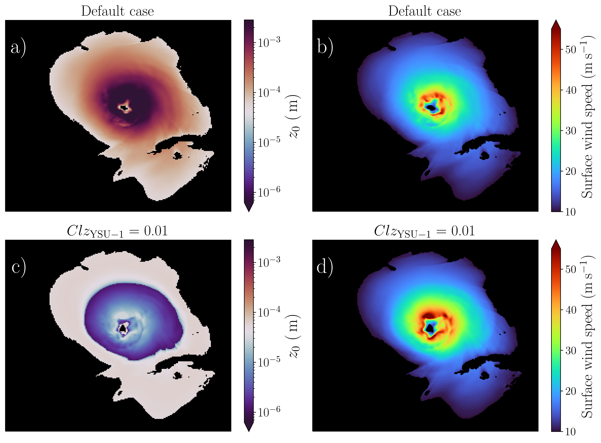

Impacts of Momentum Roughness Length on Hurricane Development
The momentum roughness length (z0) significantly impacts wind predictions
in weather and climate models. Nevertheless, the impacts of z0 parameterizations
in different wind regimes and various model configurations on the hurricane size,
intensity, and track simulations have not been thoroughly established.
To bridge this knowledge gap, a comprehensive analysis of 310
simulations of 10 real hurricanes using the Weather Research
and Forecasting (WRF) model is conducted in comparison with observations.
Our results show that the default z0 parameterizations in WRF perform well
for weak (category 1-2) hurricanes; however, they underestimate the intensities
of strong (category 3-5) hurricanes. This finding is independent of model
resolution or boundary layer schemes.
The default values of z0 in WRF agree with the observational estimates
from dropsonde data in weak hurricanes while they are much larger than
observations in strong hurricanes regime. Decreasing z0 close to the
values of observational estimates and theoretical hurricane intensity
models in high wind regimes (≳ 45 m s-1) led to significant improvements
in the intensity forecasts of strong hurricanes. A momentum budget analysis
dynamically explained why the reduction of z0 (decreased surface turbulent s
tresses) leads to stronger simulated storms.